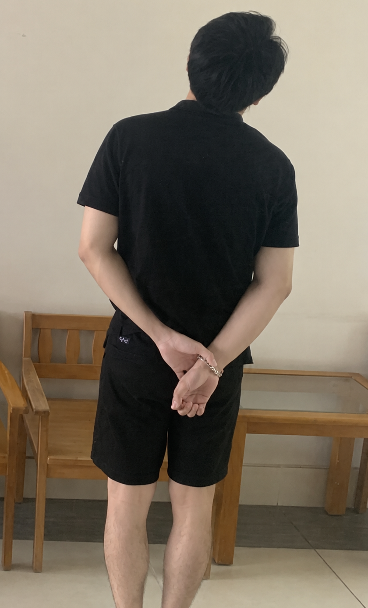

— một lá thư không gửi
TÂM TRẠNG
Làm sao để anh thoát ra,
Làm sao để anh thoát ra,
đây…
Sao lại phải chịu đựng những điều này? Người ta đã rời đi rồi mà..
Bài viết gần đây
Những tấm postcard
Mỗi bài viết là một tấm bưu thiếp gửi kèm với cảm xúc về một ngày cũ. Chọn một tấm để đọc chậm hơn.
Không tìm thấy tấm postcard nào phù hợp. Thử một từ khóa khác nhé.
Giới thiệu
MỘT GÓC NHỎ CỦA BẢN THÂN
Chào bạn,
Chào bạn,
cảm ơn vì đã ở lại.
Mình tạo ra nơi này để cất những điều chưa biết nói cùng ai — vài sự tiêu cực, nhiều ký ức cũ, những ngày trời mưa, những người đã từng rất thân và cả những phiên bản tệ hại của chính mình mà mình đang học cách chấp nhận.
Đây không phải nơi để níu kéo một người. Chỉ là một góc nhỏ chắc để nhớ rằng những gì từng đẹp đẽ vẫn xứng đáng được lưu giữ, ngay cả khi nó đã kết thúc.
Ở đây, bạn sẽ tìm thấy những dòng nhật ký ngắn, những tấm postcard buồn và đôi khi là một chút dịu dàng dành cho những ngày chưa ổn.
Nếu bạn cũng đang mang theo một câu chuyện chưa có đoạn kết, hy vọng bạn sẽ thấy mình không đơn độc.
— người viết, 1007♡
“Có thể đã có nhiều cơ hội được trao cho bản thân, chỉ là không biết nắm bắt nên họ
không còn muốn quay về.”
Về mình

THÔNG TIN
1007♡
Đang cố gắng chăm sóc cảm xúc của bản thân.
- Tên
- Nguyễn Thành
- Sinh nhật
- 09/10
- Nơi ở
- Khánh Hòa
- instagram.com/loiw.0910
- facebook.com/Justice.0910
POSTCARD · 2026
Cảm ơn vì đã ghé qua.
Nếu hôm nay trời mưa, mong bạn có một nơi để
trú.
Còn mình, mình ở đây, viết nốt những điều chưa kịp nói.
THÊM MỘT NGÀY NỮA
Có những điều không cần nói hết.
Chỉ cần nhớ rằng, đã từng có những
thời gian rất đẹp.